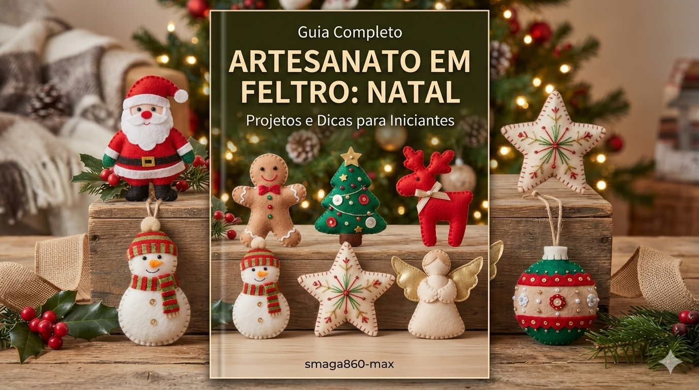

Descubra como produzir as peças natalinas mais desejadas do ano. São 10 projetos exclusivos com moldes prontos para imprimir e começar hoje mesmo.
10 Moldes em Tamanho Real: Arquivos totalmente configurados em tamanho A4. É só imprimir na sua impressora caseira e recortar.
Passo a Passo Prático: Guia didático desenhado para quem quer produzir de forma rápida, mesmo sem ter experiência em costura.

Alta Lucratividade: Peças de feltro têm um custo de produção baixíssimo e alto valor de venda no mercado de decoração de fim de ano.
O envio é feito de forma 100% automática pelo sistema. Assim que o seu pagamento for aprovado, o link de acesso para baixar o arquivo em PDF chega direto no e-mail que você cadastrou na compra.
Não precisa! Todos os projetos deste guia foram pensados e desenvolvidos para serem costurados totalmente à mão, utilizando os pontos mais tradicionais e simples do artesanato em feltro.
Sim! Todos os moldes já estão no tamanho exato e correto para impressão. Você não precisa ajustar nada no computador: basta abrir o arquivo e mandar imprimir em folhas de papel comum (tamanho A4).
Com certeza. O processo de pagamento é gerenciado por plataformas líderes de mercado totalmente seguras. Além disso, você conta com uma um garantia incondicional de 7 dias: se não gostar, basta solicitar o reembolso.